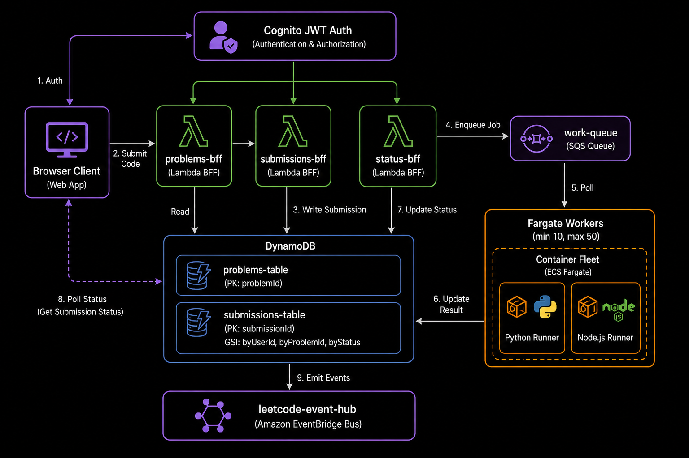
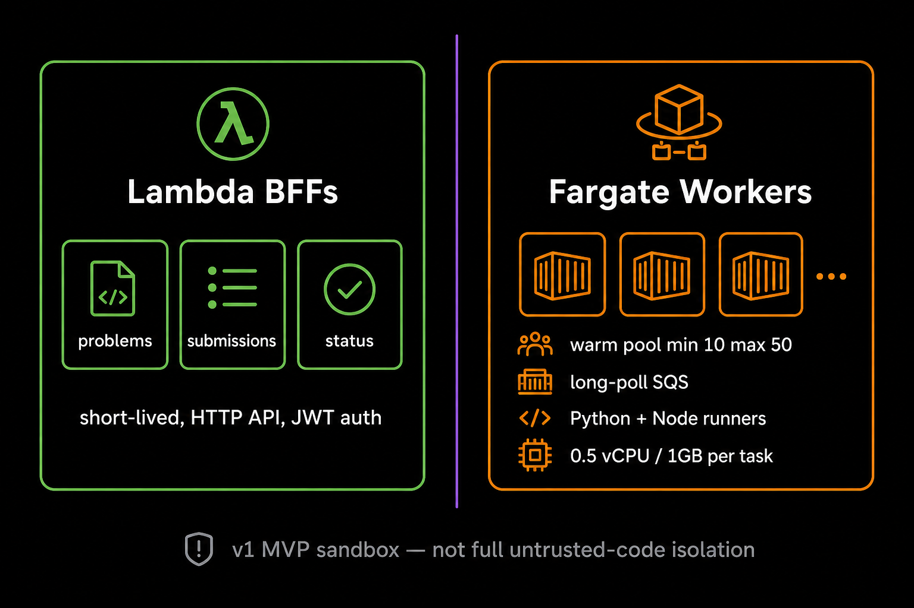
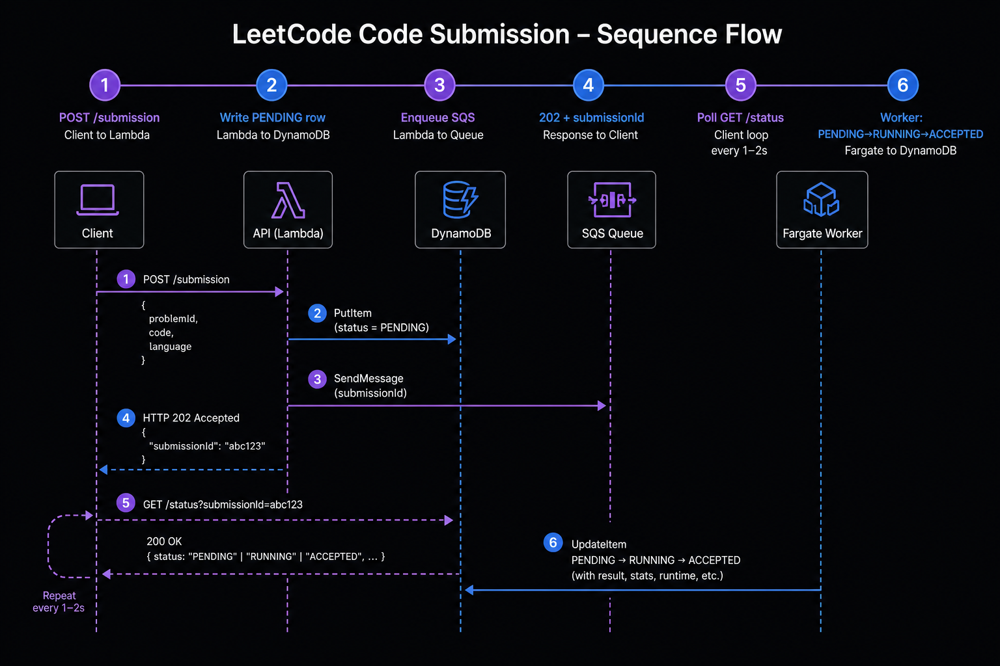

What is leetcode-app?
A LeetCode-style coding platform built on the same CQRS patterns as pastebin-app and url-shortener-app. Users browse problems, submit Python or JavaScript solutions, and poll for verdicts — all behind Cognito JWT auth.
System at a glance

Six CloudFormation stacks on one EventBridge bus. The worker fleet is the only Fargate service.
Key design principles
- BFF-per-concern — problems, submissions, and status are separate Lambda stacks that scale independently.
- Async submission —
POST /problems/{slug}/submissionreturns 202 immediately; execution happens on a warm Fargate pool. - JWT poll pattern — the client polls
GET /submissions/{id}/statusevery 1–2s until a terminal status. - Conditional DDB transitions — workers claim rows with
PENDING → RUNNING → terminalto prevent double execution. - Fargate MVP sandbox — warm pool (min 10, max 50) for trusted users; full untrusted-code isolation moves to ECS-on-EC2 + gVisor in production.
Compute split

Lambda handles short HTTP requests; Fargate holds a warm container pool for code execution without cold-start penalties.
Deployment order
- leetcode-event-hub
- leetcode-auth
- leetcode-problems-bff
- leetcode-submissions-bff
- leetcode-status-bff
- leetcode-worker-images → build & push runner image
- leetcode-workers
Interactive flow explorer
Pick a user journey to see the sequence and involved stacks.

sequenceDiagram
participant C as Browser
participant S as submissions-bff
participant D as submissions-table
participant Q as work-queue
participant W as Fargate worker
C->>S: POST /problems/{slug}/submission
Note over C,S: JWT + { language, code }
S->>S: Validate language, code ≤ 64 KiB
S->>D: PutItem status=PENDING
S->>Q: SendMessage { submissionId, problemId, language }
S-->>C: 202 { submissionId, statusUrl, status: PENDING }
W->>Q: long-poll ReceiveMessage
W->>D: UpdateItem PENDING → RUNNING
W->>W: exec python/node runner
W->>D: UpdateItem → ACCEPTED | WRONG_ANSWER | ...
sequenceDiagram
participant C as Browser
participant ST as status-bff
participant D as submissions-table
loop every 1–2 seconds until terminal
C->>ST: GET /submissions/{id}/status
Note over C,ST: JWT required
ST->>D: GetItem pk=SUB#{id}
ST->>ST: row.userId === jwt.sub (404 on mismatch)
ST-->>C: { status, resultSummary, acceptedAt }
end
Anti-corruption layer: status-bff shapes the internal DDB row into the wire format the client polls — ownership checks return 404 (not 403) to prevent submission ID probing.
flowchart LR
C[Browser + JWT] --> P[problems-bff]
P --> D[(problems-table)]
P -->|GET /problems| L[listProblems Scan]
P -->|GET /problems/slug| G[getProblemBySlug]
P -->|POST /problems| A[createProblem PutItem]
Test cases and starter code live inline on the problem row — no separate S3 bucket in v1.
stateDiagram-v2
[*] --> PENDING: submissions-bff PutItem
PENDING --> RUNNING: worker conditional claim
RUNNING --> ACCEPTED: all tests pass
RUNNING --> WRONG_ANSWER: test failure
RUNNING --> TIMEOUT: exec timeout
RUNNING --> RUNTIME_ERROR: unhandled exception
RUNNING --> COMPILE_ERROR: syntax error
ACCEPTED --> [*]
WRONG_ANSWER --> [*]
TIMEOUT --> [*]
RUNTIME_ERROR --> [*]
COMPILE_ERROR --> [*]
Failed runs may upload traces to S3; the status response exposes s3LogKey on terminal failure paths.
Stack map
API routes (all JWT-required in v1)
| Stack | Route | Role |
|---|---|---|
| problems-bff | GET /problems | List catalog |
| problems-bff | GET /problems/{slug} | Problem detail + examples |
| problems-bff | POST /problems | Author a problem |
| submissions-bff | POST /problems/{slug}/submission | Async submit → 202 |
| submissions-bff | GET /me/submissions | User history (no code) |
| status-bff | GET /submissions/{id}/status | Poll verdict |
Real source snippets
Copied from the repo — not illustrative pseudocode.
Async submission ingest
export const submitSolution = async (
event: APIGatewayProxyEventV2,
_ctx: Context,
): Promise<APIGatewayProxyResultV2> => {
const claims = requireClaims(event);
const slug = requireSlug(event);
const body = parseJsonBody<{ language?: unknown; code?: unknown }>(event);
if (!isLanguage(body.language)) {
return json(400, {
error: "bad_request",
message: `field "language" must be one of: python, javascript`,
});
}
// ... validate code ≤ 64 KiB, look up problem via gsi3 ...
const submissionId = ulid();
const submittedAt = new Date().toISOString();
const row: SubmissionRow = {
pk: `SUB#${submissionId}`,
sk: "META",
submissionId,
userId: claims.sub,
problemId: problem.problemId,
language: body.language,
code: body.code as string,
status: "PENDING",
submittedAt,
gsi1pk: `USER#${claims.sub}`,
gsi1sk: submittedAt,
};
await ddb.send(new PutCommand({ TableName: SUBMISSIONS_TABLE, Item: row }));
await sqs.send(new SendMessageCommand({
QueueUrl: WORK_QUEUE_URL,
MessageBody: JSON.stringify({
submissionId,
problemId: problem.problemId,
userId: claims.sub,
language: body.language,
submittedAt,
}),
}));
return json(202, {
ok: true,
submissionId,
statusUrl: `/submissions/${submissionId}/status`,
status: "PENDING",
});
};Status poll with ownership check
export async function getStatus(
event: APIGatewayProxyEventV2,
): Promise<APIGatewayProxyResult> {
const submissionId = event.pathParameters?.submissionId;
const sub = getRequesterSub(event);
if (!sub) {
return json(401, { error: "unauthorized", message: "missing sub claim" });
}
const got = await ddb.send(new GetCommand({
TableName: SUBMISSIONS_TABLE,
Key: { pk: `SUB#${submissionId}`, sk: "META" },
}));
const row = got.Item as SubmissionRow | undefined;
if (!row) {
return json(404, { error: "not_found", message: "submission not found" });
}
// 404, not 403 — avoids existence leak when probing other users' IDs
if (row.userId !== sub) {
return json(404, { error: "not_found", message: "submission not found" });
}
return json(200, rowToResponse(row));
}Worker claim transition
def _claim_pending(submission_id: str) -> bool:
"""PENDING -> RUNNING. Returns True on successful claim, False on race."""
now = datetime.now(timezone.utc).isoformat()
try:
ddb.update_item(
TableName=SUBMISSIONS_TABLE,
Key={"pk": {"S": f"SUB#{submission_id}"}, "sk": {"S": "META"}},
UpdateExpression=(
"SET #s = :running, startedAt = :now, "
"workerId = :wid, gsi2pk = :gsi2pk, gsi2sk = :gsi2sk, "
"#a = if_not_exists(#a, :one)"
),
ConditionExpression="#s = :pending",
ExpressionAttributeNames={"#s": "status", "#a": "attempt"},
ExpressionAttributeValues={
":running": {"S": "RUNNING"},
":pending": {"S": "PENDING"},
":now": {"S": now},
":wid": {"S": WORKER_ID},
":gsi2pk": {"S": "STATUS#RUNNING"},
":gsi2sk": {"S": now},
":one": {"N": "1"},
},
)
return True
except ddb.exceptions.ConditionalCheckFailedException:
return FalseProblem catalog (authoring)
const row: ProblemRow = {
pk: `PROBLEM#${problemId}`,
sk: "META",
problemId,
slug,
authorSub: sub,
title,
difficulty: difficulty as Difficulty,
tags: tags_dedupe,
description,
examples: parsedExamples,
constraints: constraints as string[],
createdAt,
slugKey: `SLUG#${slug}`, // GSI3 for cross-stack slug lookup
};
await ddbDoc.send(new PutCommand({
TableName: TABLE_NAME,
Item: row,
ConditionExpression: "attribute_not_exists(pk)",
}));Comprehension check
Test your understanding of leetcode-app's architecture.